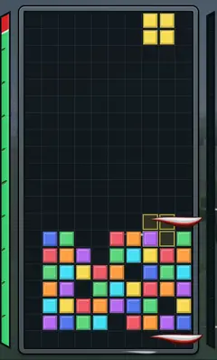
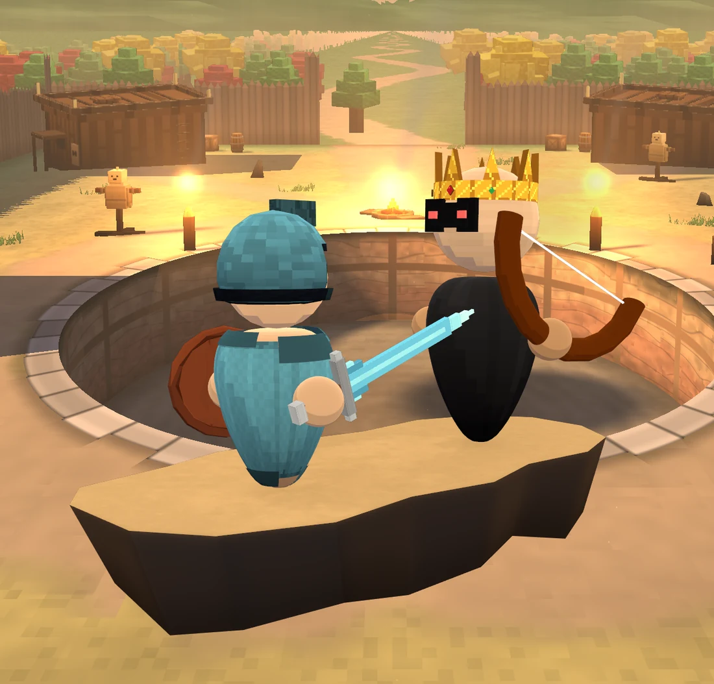

Bandit King
Bandit King is a boss met in Greenshore, Bandit Camp and Bandit Town. The ruler of Greenshore's outlaws. He switches between a rain of arrows and a blade spin that cuts your top and bottom rows.
Attacks
| Attack | Style | What it does | On the board |
|---|---|---|---|
| King's Arrow Rain | Ranged | Six arrows rain down your board, and each one that gets through hits you. Hold your falling piece under them to block them. | |
| King's Blade Spin | Ranged | His blades cut away your whole top row and bottom row, and everything drops one. A flat stack loses least. |  |
Each clip is the real fight's board, filmed from the game. It plays once it scrolls into view.
The game's advice: Hold your falling piece under his arrows to block them. A flat stack loses least to his blades.
Weakness: Triples and Quads hit it 10% harder.
Strategy
How to beat Bandit King: gear, skills and what to do on the board, in a player's words.
Locations
- Greenshore, in the Greenshore Story (fight 7 of the road)
- the Endless Dungeon's Bandit Camp: a round boss; the warden its chest follows
- the Endless Dungeon's Bandit Town: a round boss; the warden its chest follows
Combat stats
| Where | Health | Hit | Attacks every | Experience |
|---|---|---|---|---|
| Greenshore Story | 900 | 5–9 | 10s | 150 |
| Endless Dungeon, fight 1 | 1,350 | 8–14 | 6.67s | 375 |
| Endless Dungeon, fight 11 | 1,530 | 8–14 | 6.25s | 405 |
| Endless Dungeon, fight 21 | 1,800 | 9–16 | 5.71s | 450 |
| Endless Dungeon, fight 41 | 2,340 | 10–18 | 5s | 590 |
| Dark Endless Dungeon, fight 1 | 1,800 | 10–18 | 5s | 600 |
| Dark Endless Dungeon, fight 11 | 1,980 | 11–19 | 5s | 630 |
| Dark Endless Dungeon, fight 21 | 2,250 | 11–20 | 5s | 675 |
| Dark Endless Dungeon, fight 41 | 2,790 | 13–23 | 5s | 815 |
Hit is the range before your Armor takes its share. In the Endless Dungeon and its Dark an enemy grows tougher with every round of fights; champions and omens change it further. A kill from fight 25 on, in Onslaught, pays 50 experience on top.
Drops
Each kill rolls its table once in the Greenshore Story, twice in the Endless Dungeon and three times in its Dark. Every row is rolled on its own, so a kill can pay several.
| Item | Quantity | Rarity | Log |
|---|---|---|---|
 Gold Coin Gold Coin | 15–40 | 60% | ✓ |
 Iron Ingot Iron Ingot | 1–2 | 1/5 | ✓ |
 Oak Plank Oak Plank | 1–2 | 1/5 | ✓ |
 Flax Fabric Flax Fabric | 1–2 | 1/5 | ✓ |
 Mithril Ingot Mithril Ingot | 1–2 | 1/13 | |
 Maple Plank Maple Plank | 1–2 | 1/20 | |
 Bandit Blade Bandit Blade | 1 | 1/20 | ✓ |
 Oak Bow Oak Bow | 1 | 1/20 | ✓ |
 Fire Staff Fire Staff | 1 | 1/25 | ✓ |
 Bandit Crown Bandit Crown | 1 | 1/16 | ✓ |
 Iron Sword Iron Sword | 1 | 1/50 | ✓ |
 Magic Ring Magic Ring | 1 | 1/33 | ✓ |
 Treasure Seal Treasure Seal | 1 | 1/40 | ✓ |
 Magic Chain Magic Chain | 1 | 1/64 | |
 King's Idol King's Idol | 1 | 1/50 | ✓ |
Every kill also rolls
| Item | Quantity | Rarity | Notes |
|---|---|---|---|
| Rare Drop table (Greenshore) | — | 1/16 | Once a kill, whatever the mode |
 Respec Orb Respec Orb | 1 | 1/1,600 | A run's first kill; rises each kill to 1/533 from the 50th |
 Pet Bandit Pet Bandit | 1 | 1/100 | Pet, one of each |
 Gilded Ornament Kit Gilded Ornament Kit | 1 | 1/500,000 | Every kill everywhere |
Rare Drop table (Greenshore)
One kill in 16 rolls this list once, apart from the enemy's own table. Rare Drops never count toward the Collection Log.
| Item | Quantity | Rarity |
|---|---|---|
| Gold Coin | 100–300 | 1/107 |
| Iron Ingot | 4–8 | 1/100 |
| Mithril Ingot | 2–4 | 1/133 |
| Maple Plank | 2–4 | 1/160 |
 Cotton Fabric Cotton Fabric | 2–4 | 1/160 |
 Rugged Hide Rugged Hide | 1–2 | 1/200 |
 Coal Coal | 20–40 | 1/145 |
 Adamantite Ingot Adamantite Ingot | 1 | 1/400 |
 Ipe Plank Ipe Plank | 1 | 1/400 |
 Nettle Fabric Nettle Fabric | 1 | 1/400 |
| Magic Ring | 1 | 1/800 |
| Magic Chain | 1 | 1/800 |
| Treasure Seal | 1 | 1/1,600 |
| 1–3 | 1/1,600 |
Collection Log
Bandit King has a page under ENEMIES in the Collection Log, in its BOSSES section. It lists:
- Gold Coin
- Iron Ingot
- Oak Plank
- Flax Fabric
- Bandit Blade
- Oak Bow
- Fire Staff
- Bandit Crown
- Iron Sword
- Magic Ring
- Treasure Seal
- King's Idol
In the game each slot stays hidden until it drops for you.
Gallery



Trivia
Design notes and anything else worth knowing.
Changes
What changed for Bandit King, update by update.
| Enemies | |
|---|---|
| Greenshore Story | Zombie · Slime · Squirrel · Cyclops · Oak Entling · Bandit · Bandit King · Super Zombie · Punchy · Shooty · Bernie · Bandit Elite · Cultist · Cult Leader |
| Red Desert: Dust Bowl | Sand Zombie · Wormling · Desert Worm |
| Red Desert: Sand Storm | Raider · Scrap Warlord |
| Red Desert: Pyramids | Sand Zombie · Mummy · Possessed Sarcophagus |
| Red Desert: Sand Cave | Rockling · Cave Spider · Sandstone Golem |
| Red Desert: Research Station | Sand Veil Cultist · Lesser Cult Leader · The Old Man |
| Red Desert: Hellish Desert | The Unbound |
| Elsewhere | Garbage Man · Slime King |